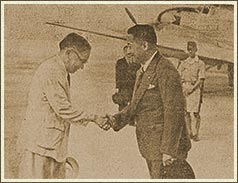

|
j
a v a s c r i p t |
April 18, 1944

Laurel bids Aquino luck for his
flight on the Kalayaan Tribune: "Filipino mission now in Tokyo.... Group will express Nation's gratitude to Nippon Empire." Aquino heads the delegation as "envoy extraordinary plenipotentiary" — that last word rankles many Filipinos. Incidentally, it's been a long time since he made an anti-American speech. Yulo, de las Alas, Alunan and Osias are attending, as well as Murata. Speculation as to the real purpose of the mission is running wild. Three persons have told me that the Japanese wanted Laurel and Recto to go but they managed to pass the buck. Three armed men stopped Bill Smith on the Santa Mesa Bridge two nights ago at 2030. "Your life or your bike," they said. Bill walked home. Tonight, the streetlights are back on for the first time since Palau. Twenty-five families from the Syquia Apartments have been summarily told to get out. They've been given just five days to find alternate housing. |
|
|
|
|